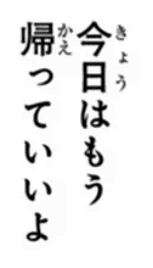
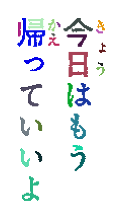
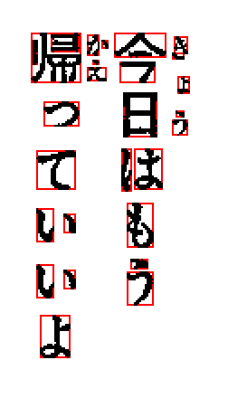
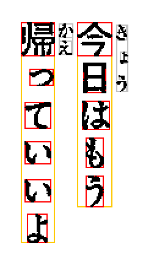

How KanjiTomo works?
This page contains a description of KanjiTomo's OCR algorithm.
| The original image | Image is sharpened | Gray pixels are removed |
|  | ||
| Touching pixels are combined into areas | Each area represents a fragment of character | Fragments are grouped into characters |
|  |  |  |
| Target character is aligned with reference characters. |
This way all common Japanese characters can be compared against each target character. Various transformations (such as stretching and offset)
are also done to find best possible alignment.